About ISOPC 2026
The 1st International Symposium on Organic Phosphorus Chemistry: Synthetic Frontiers and Practical Applications will be held at Hong Kong Baptist University (HKBU), Hong Kong from 4 to 5 December 2026.
This symposium brings together leading scientists from Hong Kong, mainland China and around the world to advance research in organic phosphorus chemistry. The event focuses on the sustainable and green synthesis of phosphorus-containing compounds, including chiral phosphorus molecules, together with their wide-ranging applications in pharmaceuticals, agrochemicals, medicine and materials. Through lectures, flash talks and networking, the forum bridges organic synthesis, catalysis, medicinal chemistry, and health science to spark new international collaborations.
Speakers
Plenary Speakers
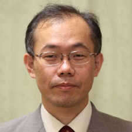
Takashi OHSHIMA大嶋孝志Kyushu University
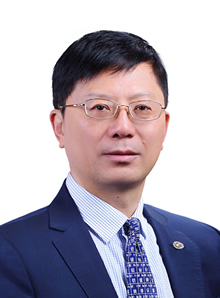
Qing-Hua FAN范青华Institute of Chemistry, Chinese Academy of Sciences
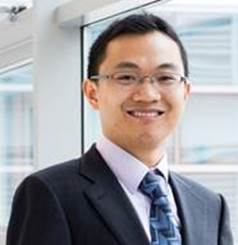
Yonggui Robin CHI池永贵Nanyang Technological University
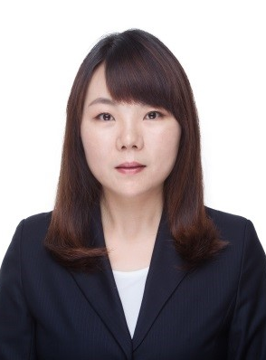
Tianli WANG王天利Sichuan University
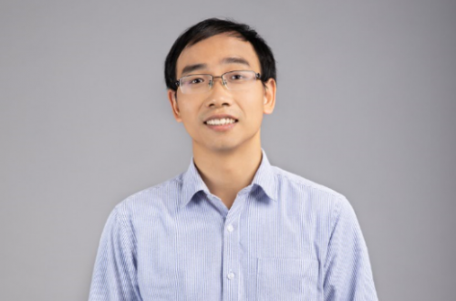
Bin TAN谭斌Southern University of Science and Technology
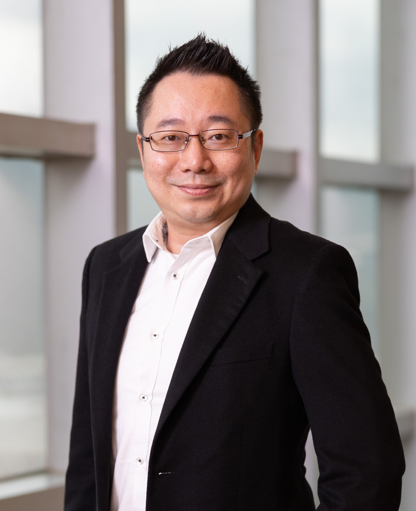
Michael Fuk Yee KWONG鄺福兒The Chinese University of Hong Kong
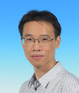
Jianwei SUN孫建偉The Hong Kong University of Science and Technology
Invited Speakers
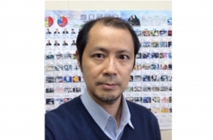
Jun ISHIHARA石原淳Nagasaki University
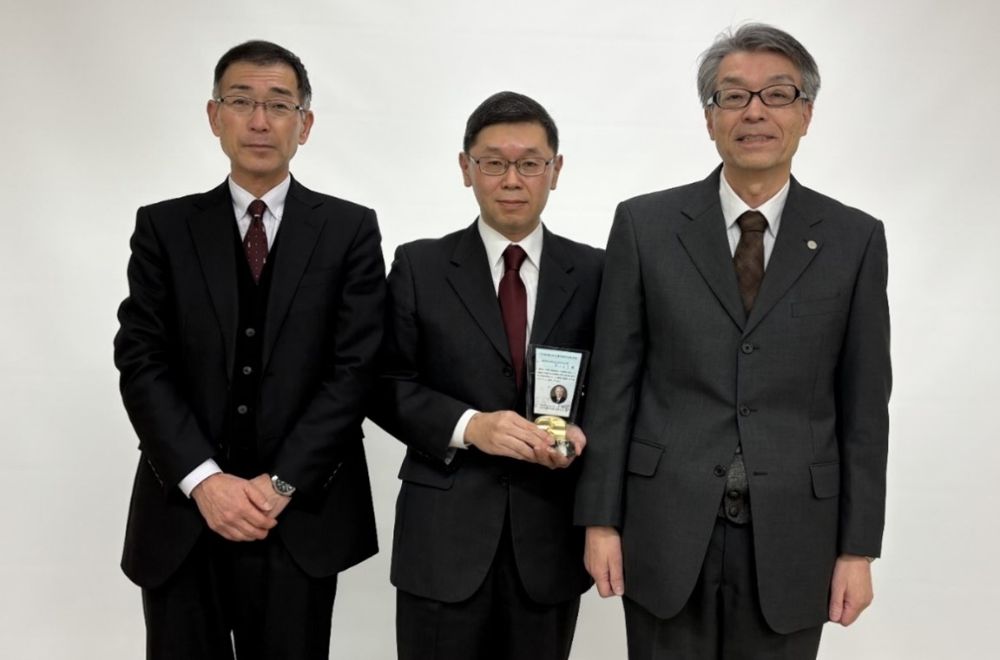
Masami KURIYAMA栗山正巳Nagasaki University
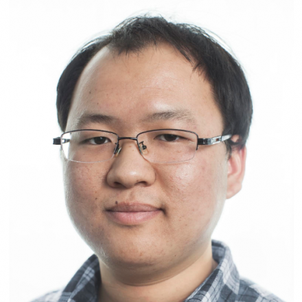
Zhongxing HUANG黄重行The University of Hong Kong
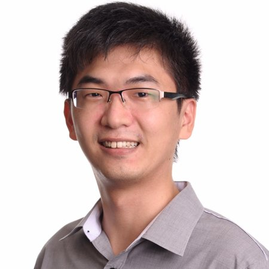
Xinglong ZHANG章兴龙The Chinese University of Hong Kong
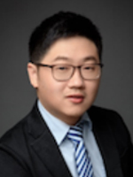
Ming SHANG商明Shanghai Jiao Tong University
Tentative Program Schedule
Dec. 4 (Friday) Day 1
| Time | Program |
|---|---|
| 09:30 – 10:00 | Opening & group photo |
| 10:00 – 10:40 | Plenary Talk (PT1) |
| 10:40 – 11:05 | Invited Talks (IT1) |
| 11:05 – 11:35 | Coffee Break & Networking |
| 11:35 – 12:00 | Invited Talks (IT2) |
| 12:00 – 12:25 | Invited Talks (IT3) |
| 12:30 – 14:00 | Lunch Break |
| 14:00 – 14:40 | Plenary Talk (PT2) |
| 14:40 – 15:05 | Invited Talks (IT4) |
| 15:05 – 15:35 | Coffee Break & Networking |
| 15:35 – 16:15 | Plenary Talk (PT3) |
| 16:15 – 16:40 | Invited Talks (IT5) |
| 16:40 – 17:05 | Invited Talks (IT6) |
| 17:05 – 17:35 | Flash talks 1 (HKBU faculty) |
| 18:00 – 20:00 | Dinner |
Dec. 5 (Saturday) Day 2
| Time | Program |
|---|---|
| 09:30 – 10:10 | Plenary Talk (PT4) |
| 10:10 – 10:50 | Plenary Talk (PT5) |
| 10:50 – 11:20 | Coffee Break & Networking |
| 11:20 – 11:45 | Invited Talks (IT7) |
| 11:45 – 12:15 | Flash talks 2 (HKBU Postdoc and RPG students) |
| 12:30 – 14:00 | Lunch Break |
| 15:00 – 18:00 | Sei Kung Excursion |
| 18:00 – 20:00 | Dinner |
Committee
Symposium Chair
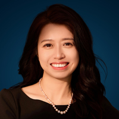
Prof. Jun (Joelle) WANG
Chair Professor, Department of Chemistry, HKBU
Organizing Committee
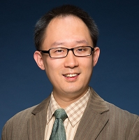
Prof. Kangning REN
Head of Department of Chemistry, HKBU
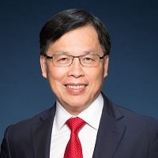
Prof. Rick WONG
Executive Strategy Officer (BNBU), HKBU
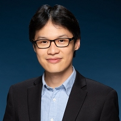
Prof. Wei Shen AIK
Associate Head (Research) of Department of Chemistry, HKBU
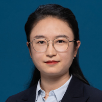
Dr. Jie ZHANG
Research Assistant Professor, Department of Chemistry, HKBU
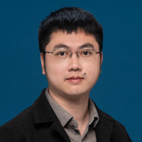
Dr. Jiayu LIAO
Research Assistant Professor, Department of Chemistry, HKBU
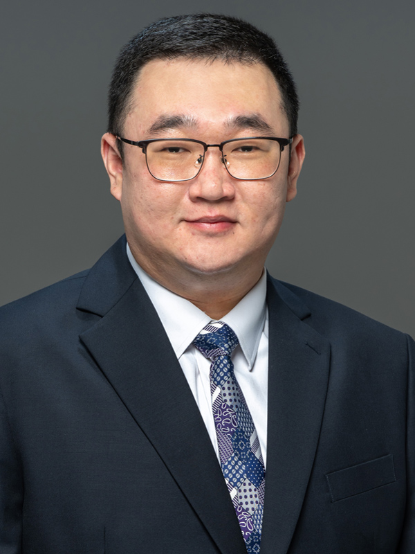
Dr. Zihao WANG
Research Assistant Professor, Clinical Division, School of Chinese Medicine, HKBU